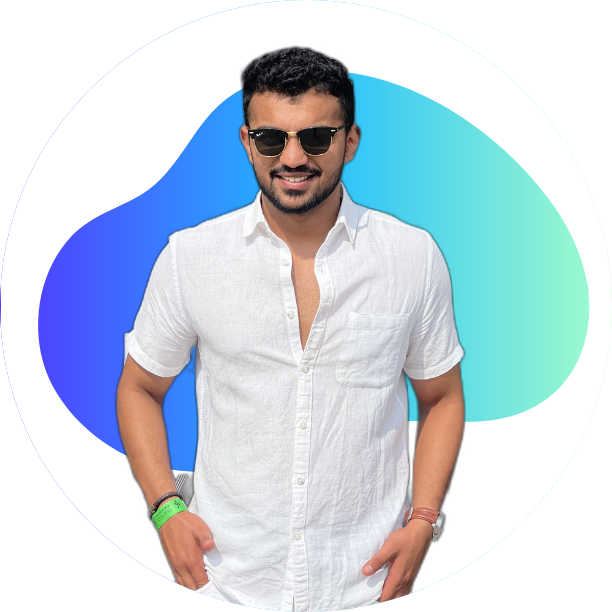

RAJAT KERKAR
Project Manager at Claysys Technologies, fostering collaboration, innovation, and fun while driving successful project outcomes.
👉 rajatkerkar.official@gmail.com
Tech stack
Jira, Devops Boards, Confluence, Trello
Scrum, Kanban, Scrumban
Python, C, C++, SQL
PyCharm, Jupyter, Visual Studio
Windows OS, Mac OS, MS Office Suite
Work History
🚧 IT PROJECT MANAGER | CLAYSYS TECHNOLOGIES
July 2021 - Present
Responsibilities/ Contribution:
- Established AI/ML branch and managed client requirements.
- Coordinated feature releases with business and IT teams.
- Led project planning and aligned objectives.
- Managed staff and resources for project execution.
- Sourced and onboarded skilled candidates for teams.
- Provided Agile methodology training.
- Ensured project progress and adapted strategies.
- Managed JIRA stories and tracked progress.
- Facilitated grooming and planning meetings.
- Optimized processes and mitigated impediments.
🚧 AI SOFTWARE DEVELOPER | CLAYSYS TECHNOLOGIES
July 2020 -July 2021
Responsibilities/ Contribution:
- Craft AI models with tracked metrics to hit targets.
- Analyze resources for realistic deadlines.
- Hunt for online datasets to enrich training.
- Dive into data to unveil patterns.
- Scrub data rigorously for accuracy.
- Fortify model resilience with balanced data.
- Oversee data acquisition and supplement as needed.
- Assess ML algorithms by success potential.
- Define validation tactics for model performance.
- Fine-tune models for optimal results and error handling.
🚧 JR. SOFTWARE DEVELOPER | REMOTE SOFTWARE SOLUTIONS PVT. LTD
December 2019 - May 2020
Responsibilities/ Contribution:
- Developed SAR solution using Flask, HTML, CSS, and Ajax for UK data protection laws.
- Applied AI for scanning and analyzing organizational files to identify data subjects.
- Used NLP for filtering data to enhance compliance.
- Redacted irrelevant content for data protection.
- Integrated code version control for collaboration.
- Delivered filtered information in PDF for SAR process efficiency.
🚧 SOFTWARE QUALITY ASSURANCE ENGINEER | REMOTE SOFTWARE SOLUTIONS PVT. LTD
July 2019 - December 2019
Responsibilities/ Contribution:
- Developed iConsent Application for digitizing Immunization Consent Forms in the UK.
- Derived comprehensive test scenarios for various usage and edge cases.
- Created detailed test cases for effective validation of application functionality.
- Executed rigorous testing to identify deviations from expected behavior.
- Played a key role in Agile testing for ensuring application reliability.
- Reported test status to stakeholders to track project progress.
- Tracked defects systematically using Jira and Excel for efficient resolution.